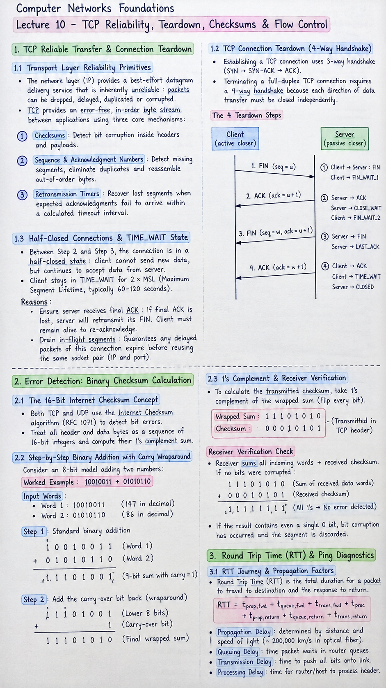

Short Notes & Visual Summary
Handwritten / quick summary notes for Lecture 10:

Click image to open high-resolution version in new tab
TCP Reliable Transfer & Connection Teardown
1.1 Transport Layer Reliability Primitives
The network layer (IP protocol) provides a best-effort datagram delivery service that is inherently unreliable: packets can be dropped, delayed, duplicated, or corrupted in transit. TCP provides an abstraction of an error-free, in-order byte stream between applications using three core mechanisms:
- Checksums: Detect bit corruption inside headers and payloads.
- Sequence & Acknowledgment Numbers: Detect missing segments, eliminate duplicates, and reassemble out-of-order bytes into the correct sequence.
- Retransmission Timers: Recover lost segments when expected acknowledgments fail to arrive within a calculated timeout interval.
1.2 TCP Connection Teardown (4-Way Handshake)
While establishing a TCP connection takes a 3-way handshake (SYN → SYN-ACK → ACK), terminating a full-duplex TCP connection requires a 4-Way Handshake because each direction of data transfer must be closed independently:
- Step 1 (Client FIN): The client application calls
close(). The client TCP stack transmits a segment with the FIN flag set ($seq = u$) to notify the server that it has no more data to send. The client transitions to theFIN_WAIT_1state. - Step 2 (Server ACK): The server receives the FIN, acknowledges it with an ACK segment ($ack = u + 1$), and transitions to
CLOSE_WAIT. The client receives this ACK and entersFIN_WAIT_2. Data can still flow from server to client. - Step 3 (Server FIN): Once the server finishes sending all remaining application data, its application layer calls
close(). The server transmits its own FIN segment ($seq = w, ack = u + 1$) and transitions toLAST_ACK. - Step 4 (Client ACK): The client receives the server's FIN, replies with an ACK ($ack = w + 1$), and transitions to the
TIME_WAITstate. The server receives the final ACK and immediately moves toCLOSED.
1.3 Half-Closed Connections & TIME_WAIT State
Between Step 2 and Step 3, the connection is in a half-closed state: the client cannot send new application data, but it continues to accept data transmitted by the server.
The client does not close immediately after sending the final ACK; it stays in TIME_WAIT for $2 \times \text{MSL}$ (Maximum Segment Lifetime, typically 60–120 seconds):
- Ensure Server Receives Final ACK: If the final ACK in Step 4 is lost, the server will retransmit its FIN. The client must remain alive to re-acknowledge that FIN rather than returning a
RSTerror. - Drain In-Flight Segments: It guarantees that any delayed packets belonging to the current connection expire inside intermediate routers before a new connection reuses the same socket pair (IP and port).
Error Detection: Binary Checksum Calculation
2.1 The 16-Bit Internet Checksum Concept
Both TCP and UDP utilize the Internet Checksum algorithm (RFC 1071) to detect bit errors introduced during transmission over noisy physical links or faulty router memory. The protocol treats all header and data bytes as a sequence of 16-bit integers and computes their 1's complement sum.
2.2 Step-by-Step Binary Addition with Carry Wraparound
To understand the mathematics, consider an 8-bit model adding two numbers:
Input Words:
- Word 1:
10010011(147 in decimal) - Word 2:
01010110(86 in decimal)
Step 1: Perform standard binary addition:
1 0 0 1 0 0 1 1 (Word 1) + 0 1 0 1 0 1 1 0 (Word 2) ------------------ 1 1 1 1 0 1 0 0 1 (9-bit sum with carry-out bit '1')
Step 2: Add the carry-over bit back into the least significant bit (wraparound):
1 1 1 0 1 0 0 1 (Lower 8 bits) + 1 (Carry-over bit) ------------------ 1 1 1 0 1 0 1 0 (Final wrapped sum)
2.3 1's Complement & Receiver Verification
To calculate the transmitted checksum, take the 1's complement of the wrapped sum by flipping every bit (0 becomes 1, 1 becomes 0):
Wrapped Sum: 1 1 1 0 1 0 1 0 Checksum: 0 0 0 1 0 1 0 1 (Transmitted in TCP Header)
The receiver sums all incoming words plus the received checksum. If no bits were corrupted:
1 1 1 0 1 0 1 0 (Sum of received data words) + 0 0 0 1 0 1 0 1 (Received checksum) ------------------ 1 1 1 1 1 1 1 1 (All 1s -> No error detected)
If the result contains even a single 0 bit, bit corruption has occurred and the segment is discarded.
Round Trip Time (RTT) & Ping Diagnostics
3.1 RTT Journey & Propagation Factors
Round Trip Time (RTT) is the total duration required for a data packet to travel from a sender across the network to a destination, plus the time required for the destination's acknowledgment (or response) to travel back to the sender:
$$\text{RTT} = t_{\text{prop, forward}} + t_{\text{queue, forward}} + t_{\text{trans, forward}} + t_{\text{proc}} + t_{\text{prop, return}} + t_{\text{queue, return}} + t_{\text{trans, return}}$$- Propagation Delay: Determined by physical distance and speed of light through medium ($\sim 200,000\text{ km/s}$ in optical fiber).
- Queueing Delay: Varies dynamically with real-time router buffer congestion along the path.
3.2 Ping Diagnostics & Latency Measurement
The ping utility uses ICMP (Internet Control Message Protocol) Echo Request and Echo Reply messages to measure round-trip latency and packet loss:
$ ping -c 4 8.8.8.8 64 bytes from 8.8.8.8: icmp_seq=1 ttl=117 time=14.2 ms 64 bytes from 8.8.8.8: icmp_seq=2 ttl=117 time=13.8 ms 64 bytes from 8.8.8.8: icmp_seq=3 ttl=117 time=14.1 ms 64 bytes from 8.8.8.8: icmp_seq=4 ttl=117 time=14.0 ms --- 8.8.8.8 ping statistics --- 4 packets transmitted, 4 received, 0% packet loss, time 3004ms rtt min/avg/max/mdev = 13.812/14.025/14.218/0.145 ms
Key metrics reported:
- time: RTT for individual probe packet in milliseconds.
- packet loss: Percentage of packets dropped by congested routers or filtered by firewalls.
- mdev / jitter: Standard deviation of RTT, indicating route stability and queueing fluctuations.
3.3 Comparing Low vs. High Latency Destinations
| Target Type | Typical RTT | Dominant Delay Factor | Impact on TCP |
|---|---|---|---|
| Local Gateway / LAN | < 1 – 3 ms | Switching / processing | Instant handshakes; near-instantaneous slow-start ramp-up. |
| Same Country / CDN Edge | 10 – 30 ms | Regional fiber propagation | Fast interactive web rendering; rapid ACK turnaround. |
| Cross-Continent / Transoceanic | 150 – 280 ms | Subsea optical cable distance | High Bandwidth-Delay Product (BDP); slow window expansion under Stop-and-Wait. |
Stop-and-Wait Bottleneck & Pipelining Solutions
4.1 Stop-and-Wait Utilization Inefficiency
In a simple Stop-and-Wait protocol, the sender transmits a single packet of size $L$ bits onto a channel of bandwidth $R$ bps, then pauses completely until the receiver's acknowledgment travels back over the RTT. The link remains completely idle for almost the entire duration.
4.2 Mathematical Link Utilization Breakdown
The transmission duration is $t_{\text{trans}} = L / R$. The sender utilization $U_{\text{sender}}$ is the fraction of time the sender is actively transmitting data onto the physical link:
$$U_{\text{sender}} = \frac{t_{\text{trans}}}{\text{RTT} + t_{\text{trans}}} = \frac{L / R}{\text{RTT} + L / R}$$Consider a 1 Gbps cross-country link ($R = 10^9$ bps) with an RTT of 30 ms and a 1 KB packet size ($L = 8000$ bits):
$$t_{\text{trans}} = \frac{8000 \text{ bits}}{10^9 \text{ bps}} = 8 \times 10^{-6} \text{ s} = 0.008 \text{ ms}$$ $$U_{\text{sender}} = \frac{0.008 \text{ ms}}{30 \text{ ms} + 0.008 \text{ ms}} = \frac{0.008}{30.008} \approx 0.000267 = 0.027\%$$The sender transmits for only 8 microseconds out of every 30,008 microseconds. The gigabit link delivers an effective throughput of only 267 kbps!
4.3 Pipelined Windows (GBN vs. Selective Repeat)
To overcome this bottleneck, modern transport protocols implement Pipelining: the sender is allowed to transmit up to $N$ unacknowledged packets back-to-back, multiplying utilization by up to factor $N$ ($U_{\text{pipelined}} = N \cdot U_{\text{stop-and-wait}}$):
- Go-Back-N (GBN): Uses cumulative ACKs and a single retransmission timer. If packet $k$ is dropped, the sender retransmits packet $k$ and all subsequent unacknowledged packets in the window, even if they were already received correctly.
- Selective Repeat (SR): The receiver individually acknowledges every correctly received packet and buffers out-of-order packets. On timeout, the sender retransmits only the single missing packet.
TCP Flow Control & Zero Window Probing
5.1 The Receive Window (rwnd) Mechanism
TCP provides Flow Control to ensure a fast sender never floods a slow receiving application whose CPU cannot drain its incoming buffer fast enough. The receiver advertises its available buffer capacity in the 16-bit Receive Window (rwnd) field of every ACK packet:
$$rwnd = \text{RcvBuffer} - [\text{LastByteRcvd} - \text{LastByteRead}]$$The sender enforces this limit before transmitting new bytes:
$$\text{LastByteSent} - \text{LastByteAcked} \le rwnd$$5.2 The Zero Window Condition (rwnd = 0)
When the receiving application stalls, locks, or performs intensive processing without calling read(), the receiver's socket buffer completely fills up ($\text{LastByteRcvd} - \text{LastByteRead} = \text{RcvBuffer}$).
- The receiver sends an ACK advertising
rwnd = 0. - This event is known as the Zero Window Condition.
- Upon receiving
rwnd = 0, the sender immediately halts further data transmission to avoid dropping packets.
5.3 Zero Window Probes (ZWP) & Deadlock Prevention
If the sender simply waited passively for the receiver to send an updated ACK with rwnd > 0, a catastrophic deadlock could occur: if that window update ACK were dropped in the network, the sender would wait forever for an update, and the receiver would wait forever for new data.
- Persist Timer: When the sender receives
rwnd = 0, it activates a persist timer. - 1-Byte Probe Segment: When the persist timer expires, the sender dispatches a Zero Window Probe (ZWP) containing 1 byte of payload (or an empty payload segment with the next valid sequence number).
- Mandatory ACK Response: The receiver cannot drop the probe silently; it is forced to reply with an ACK acknowledging the probe byte and stating its current
rwnd. - Exponential Backoff: If
rwndis still 0, the sender restarts its persist timer with exponential backoff (e.g., 5s, 10s, 20s up to 60s) and continues probing until buffer space re-opens.
Original PDF Notes
Below is the original PDF document for reference: